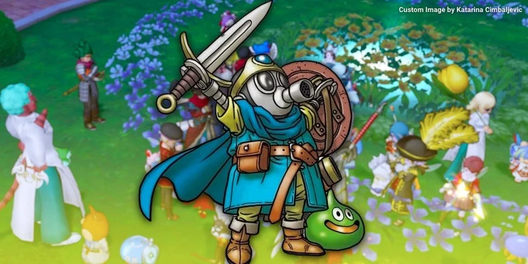

Giới truyện tranh thương tiếc 'ngọn đuốc manga' Akira Toriyama
Thứ tư, 23/3/2024 09:07 (GMT+7)
Sự ra đi đột ngột của Akira Toriyama đã gây chấn động khắp thế giới. Rất nhiều người hâm mộ cũng như đồng nghiệp của ông đã bày tỏ sự kính trọng.
Akira Toriyama là cha đẻ của Sand Land, Dr. Slump và đỉnh cao là Dragon Ball. Ảnh hưởng của ông không chỉ giới hạn trong thương hiệu Bảy viên ngọc rồng mà còn là niềm cảm hứng lớn đối với các mangaka trẻ tuổi. Sự ra đi của ông để lại nhiều tiếc thương cho người hâm mộ cũng như những đồng nghiệp trong giới. Và họ cũng đã nhanh chóng để lại những dòng tri ân đầy xúc động dành cho vị tác giả tài năng này.
Lời tri ân xúc động của đồng nghiệp
Akira Toriyama đã dành hơn 40 năm để tạo ra các tác phẩm ở nhiều phương tiện khác nhau cùng nhiều đồng nghiệp, cộng sự. Trong số đó, người gắn bó với ông lâu nhất có lẽ là Kazuhiko Torishima, biên tập viên đầu tiên của Akira Toriyama.

Với hơn 45 năm cộng tác, mối quan hệ giữa họ đã hơn cả đồng nghiệp, cả hai trở thành những người bạn thực sự của nhau. Sau này, Torishima vẫn thường xuyên tư vấn cho Akira Toriyama dù họ không còn trực tiếp làm việc với nhau nữa. Một đối tác lâu dài khác của Akira Toriyama là Yuji Horii - nhà thiết kế trò chơi điện tử nổi tiếng thế giới.
Yuji Horii, cùng Akira Toriyama và Koichi Sugiyama, đã tạo ra thương hiệu Dragon Quest huyền thoại. Dưới đây là những lời tri ân đầy chân thành của ông dành cho Akira Toriyama, trong đó có cả các nhận xét về tầm ảnh hưởng của Akira Toriyama đối với Dragon Quest.
"Toriyama-san là một người quen của tôi từ khi tôi còn hoạt động tại Shōnen Jump, và theo lời khuyên từ biên tập viên của ông ấy, Torishima-san, tôi quyết định nhờ Akira Toriyama thực hiện phần thiết kế đồ họa cho Dragon Quest khi tôi bắt đầu làm việc với trò chơi đó.
Hơn 37 năm sau, ông ấy đã tạo ra rất nhiều mẫu nhân vật và quái vật hấp dẫn đến nỗi tôi khó có thể đếm hết.
Lịch sử của Dragon Quest gắn liền với thiết kế nhân vật của Toriyama-san. Toriyama-san, cùng Sugiyama-sensei quá cố, là đối tác lâu năm trong việc thực hiện Dragon Quest.
Nghĩ đến việc anh sẽ ra đi… Về những gì tôi có thể nói, tôi không thể diễn đạt bằng lời hơn thế này. Nó thực sự rất đau lòng”.
Không có đối tác nào của Akira Toriyama hiện nổi tiếng hơn Toyotarou. Khi Dragon Ball được hồi sinh với Dragon Ball Super, Toyotarou đã làm việc cùng với Akira Toriyama trong một thời gian dài để vừa sáng tác mới, vừa khớp lại các chi tiết đối với mạch truyện gốc.
Do đó, nhiều người thực sự coi Toyotarou là người kế thừa những di sản khổng lồ của Dragon Ball từ Akira Toriyama. Phản ứng của Toyotarou trước sự ra đi của người tiền bối thân thiết rất ngắn gọn. Tuy nhiên, ai cũng hiểu rằng tầm ảnh hưởng của Toriyama đến Toyotarou là nhiều như thế nào.
“Tôi vẽ manga chỉ vì muốn được Toriyama-sensei khen ngợi. Ông ấy là tất cả đối với tôi”.
Giới manga trân trọng cống hiến của bậc đàn anh
Những đóng góp của Akira Toriyama cho thế giới manga là không thể đong đếm. Và hiện nay không ít mangaka lớn trong ngành đang thể hiện sự tôn trọng của họ đến người đồng nghiệp quá cố. Ngoài Masakazu Katsura, một trong những tác giả có mối quan hệ lâu dài nhất với Akira Toriyama chính là Takehiko Inoue của các tác phẩm Slam Dunk và Vagabond nổi tiếng.
Trong những năm 1990, Dragon Ball và Slam Dunk là những bộ manga nổi tiếng nhất trên Weekly Shonen Jump, và thậm chí có thể là cả thế giới. Do đó, không lạ khi Takehiko Inoue đã có một thông điệp ngắn gọn nhưng sâu sắc về sự ra đi của Akira Toriyama.
Thế hệ tác giả truyện tranh mới hơn cũng dành sự tôn trọng rất lớn cho Akira Toriyama. Đáng chú ý là Yusuke Murata - họa sĩ của bộ One-Punch Man nổi tiếng. Murata đã nhiều lần vẽ fanart về Dragon Ball trong suốt những năm qua. Và bản chất mạnh mẽ của nhân vật Saitama đã khiến Dragon Ball và One-Punch Man có nhiều sự đồng điệu. Yusuke Murata không có gì ngoài sự tôn trọng dành cho Akira Toriyama.
Cũng không thể không nhắc đến ảnh hưởng lớn của Akira Toriyama đến các tác giả của “Big 3 Shounen”, những người đã tiếp tục kế thừa ngọn đuốc của Toriyama và đưa manga lan tỏa ra trường quốc tế.
"Ngọn đuốc Manga" Akira Toriyama qua đời". Sự ra đi đột ngột của Akira Toriyama đã gây chấn động khắp thế giới. Rất nhiều người hâm mộ cũng như đồng nghiệp của ông đã bày tỏ sự kính trọng.
Thành công của loạt phim '7 viên ngọc rồng' là đột phá của ngành công nghiệp anime. Khó bộ phim hoạt hình nào khác có thể chạm đến sức ảnh hưởng như vậy.
Trong “One Piece”, Kaido là một trong những nhân vật mạnh mẽ và để lại nhiều ấn tượng đậm nét. Không nhiều đối thủ có thể hạ gục ông ta và dưới đây là số ít người như thế.